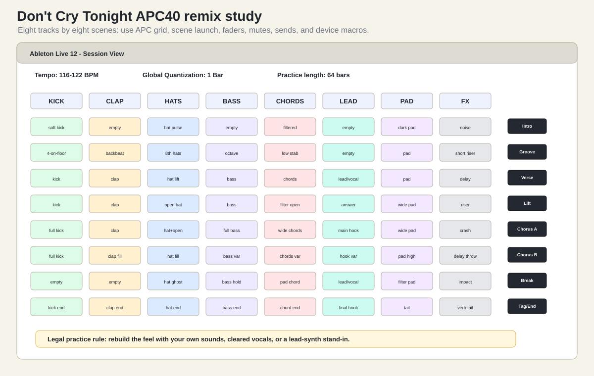
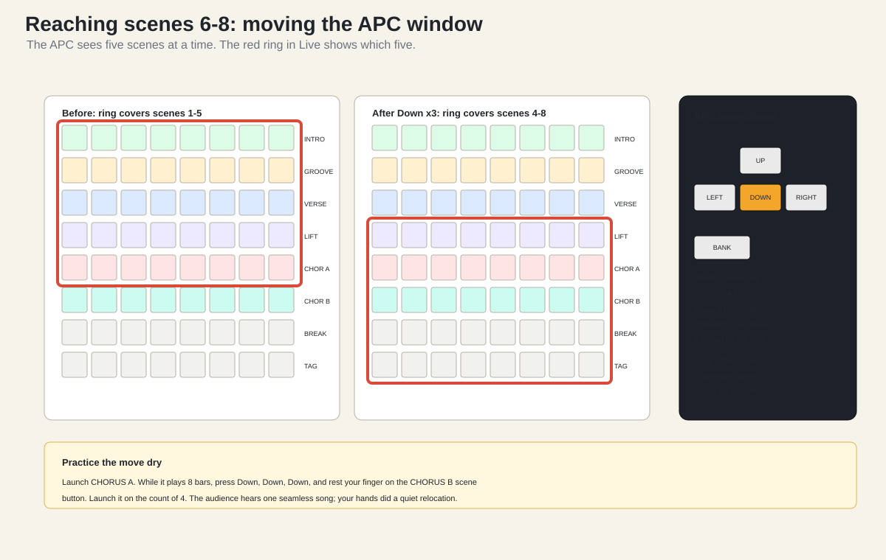
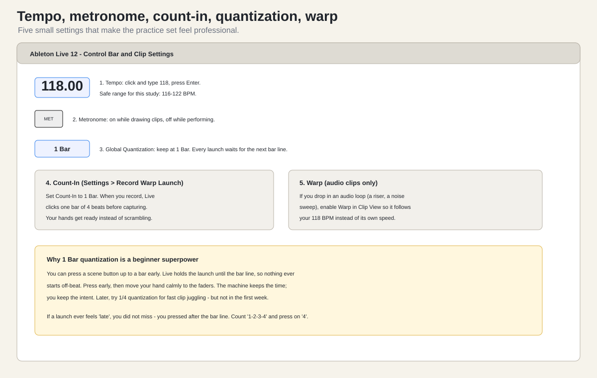
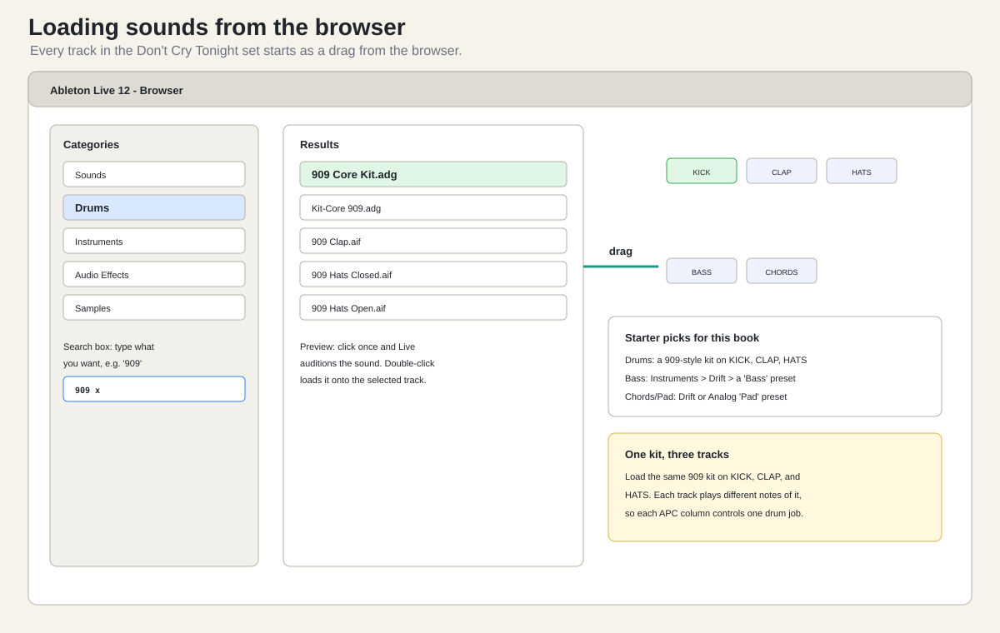
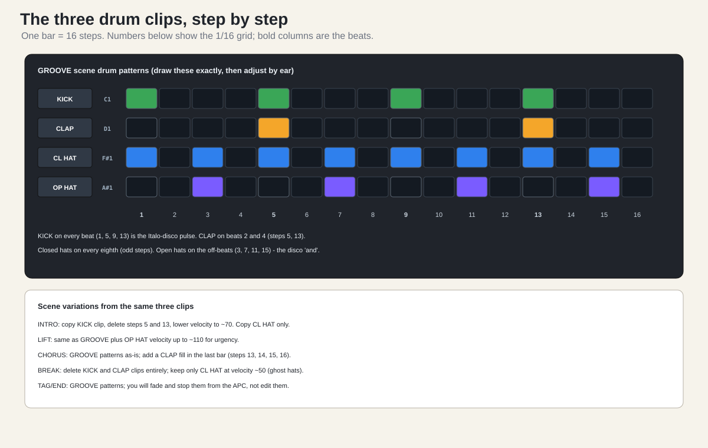
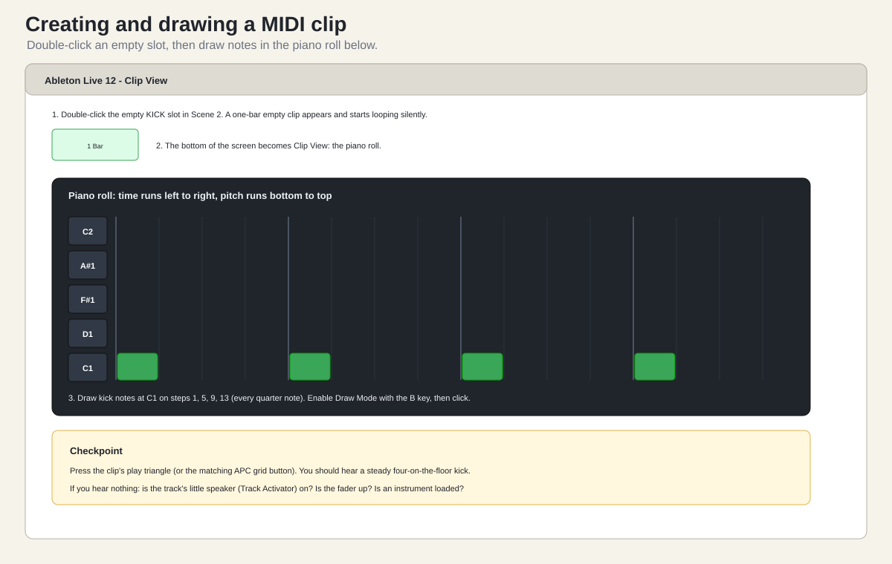
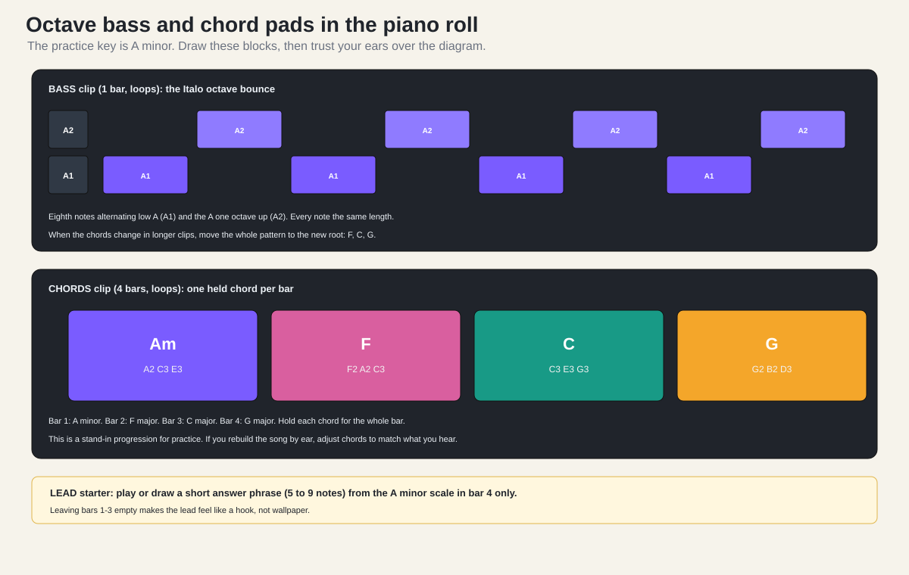
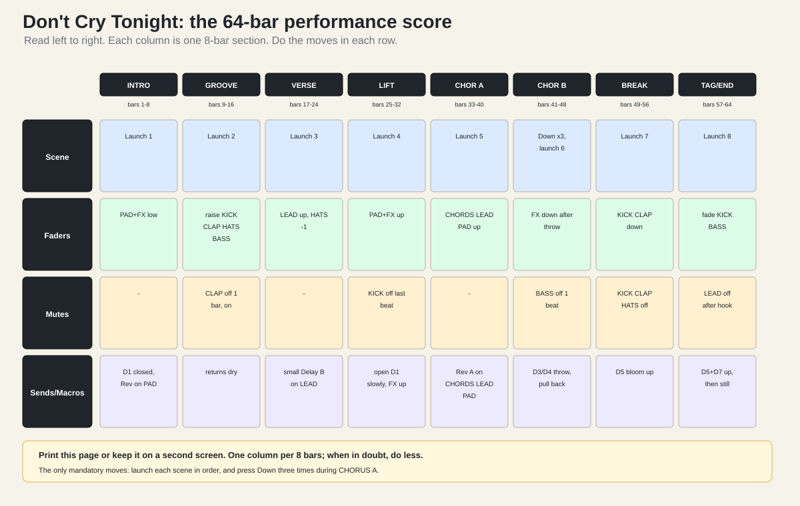
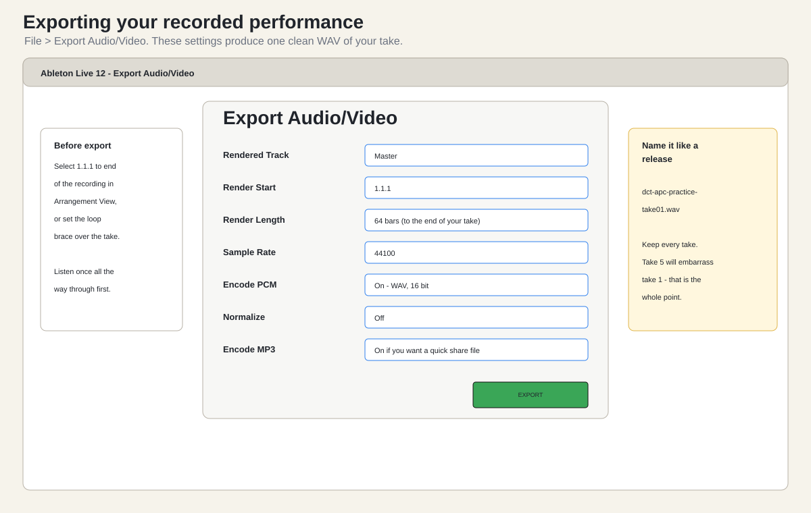

Reference video:
Savage & John.E.S - Don t cry tonight (The official remix)
https://www.youtube.com/watch?v=zuHLHvZv4Ac
Length: 5:47
Uploader: John E.SThis chapter translates the mix into an APC40 MK2 and Ableton Live 12 practice set. It does not ask you to copy the original recording, rip the video audio, or publish a remake with uncleared material. The practical goal is to recreate the arrangement feel: Italo-disco pulse, octave bass, emotional synth chords, lead/vocal focus, risers, delay throws, wide chorus, break, and final tag.
Use one of these legal source approaches:
| Source approach | Use it for |
|---|---|
| Your own voice | Best personal version. Sing or speak a short guide phrase. |
| Lead synth | Best first APC-only version, because no microphone is needed. |
| Cleared vocal phrase | Best polished version if you have rights. |
| Private study reference | Fine for learning privately; do not publish uncleared audio. |
This chapter is more advanced than the first Kiffness exercise because it uses eight scenes instead of five. That means the APC stays in one visible 8 by 5 grid for the first five scenes, then you press the Down arrow three times to bring scenes 6-8 into the window (the ring moves one scene per press). That navigation move is deliberate: it teaches you to move the APC session window without turning the set into chaos.

Before building anything, study the reference the way a remixer does: with a worksheet, not a couch. Play the 5:47 video twice. The first time, just listen. The second time, pause at every change and fill in a table like this with your own timestamps:
| Your timestamp | Section name | What enters | What leaves |
|---|---|---|---|
| 0:00 | Intro | … | … |
| … | First groove | … | … |
| … | Verse | … | … |
| … | Chorus | … | … |
| … | Break | … | … |
| … | Final tag | … | … |
You are listening for six specific ingredients, because they map directly onto the eight APC columns you are about to build:
Write the answers in your own words. The point of the worksheet is that when you later ask “what should happen in scene 4?”, you answer from your own ears, not from this book. This study stays private; the set you build uses your own sounds.
Create a new Live Set and save it immediately:
APC Dont Cry Tonight Practice 01Set:
| Setting | Value |
|---|---|
| Tempo | 116-122 BPM |
| Time signature | 4/4 |
| Global Quantization | 1 Bar |
| Count-in | 1 Bar if recording new material |
| Warp | On for audio loops that must follow tempo |
| Arrangement length target | 64 bars for the first practice version |
Start at 118 BPM if you do not know where to begin. The earlier GarageBand study used 116-122 BPM as the safe range. Stay in that range until the groove feels right.
Use eight tracks so the first APC grid maps perfectly to the set:
| APC column | Ableton track | Purpose |
|---|---|---|
| 1 | KICK |
Four-on-the-floor pulse and section anchor. |
| 2 | CLAP |
Backbeat, fills, and chorus lift. |
| 3 | HATS |
Eighth-note motion, open-hat transitions, ghost hats. |
| 4 | BASS |
Italo octave bass and bass holds. |
| 5 | CHORDS |
Analog pad, synth strings, minor/major emotional bed. |
| 6 | LEAD |
Lead synth, sung guide, or cleared vocal phrase. |
| 7 | PAD |
Wide pad, filtered pad, chorus width, ending tail. |
| 8 | FX |
Risers, impacts, delay throws, noise, reverb tails. |
Color the track headers and clips by family:
| Track | Color |
|---|---|
KICK |
green |
CLAP |
amber |
HATS |
blue |
BASS |
purple |
CHORDS |
red or rose |
LEAD |
teal |
PAD |
violet |
FX |
gray or orange |
Do not add more tracks for the first pass. If you need extra layers, resample or combine them into the existing columns. The APC is easiest when one column has one job.
Create eight scenes:
| Scene | Bars | Job |
|---|---|---|
1 INTRO |
1-8 | Filtered mood: kick hint, hat pulse, dark pad, noise. |
2 GROOVE |
9-16 | Four-on-floor, clap, hats, octave bass. |
3 VERSE |
17-24 | Lead or vocal stand-in enters over restrained arrangement. |
4 LIFT |
25-32 | Open hat, filter opening, riser, wider pad. |
5 CHORUS A |
33-40 | Full drums, full bass, chords, main hook, crash. |
6 CHORUS B |
41-48 | Variation: fills, answer phrase, delay throw. |
7 BREAK |
49-56 | Drums reduced, pad/lead focus, impact into return. |
8 TAG/END |
57-64 | Final hook, bass ending, reverb tail, clean stop. |
Scenes 1-5 are visible in the first APC window. To reach scenes 6-8,
press the APC Down arrow three times after launching
CHORUS A — each press moves the Session ring down by one
scene, so three presses put scenes 4-8 under the grid. Practice that
movement slowly: launch CHORUS A, press Down, Down, Down,
rest your right hand near the scene buttons, and launch
CHORUS B on the next count of 4.

Build these clips even if they are placeholders at first:
| Scene | KICK | CLAP | HATS | BASS | CHORDS | LEAD | PAD | FX |
|---|---|---|---|---|---|---|---|---|
| INTRO | soft kick | empty | hat pulse | empty | filtered | empty | dark pad | noise |
| GROOVE | 4-on-floor | backbeat | 8th hats | octave | low stab | empty | pad | short riser |
| VERSE | kick | clap | hat lift | bass | chords | lead/vocal | pad | delay |
| LIFT | kick | clap | open hat | bass | filter open | answer | wide pad | riser |
| CHORUS A | full kick | clap | hats+open | full bass | wide chords | main hook | wide pad | crash |
| CHORUS B | full kick | clap fill | hat fill | bass var | chords var | hook var | pad high | delay throw |
| BREAK | empty | empty | hat ghost | bass hold | pad chord | lead/vocal | filter pad | impact |
| TAG/END | kick end | clap end | hat end | bass end | chord end | final hook | tail | verb tail |
For the first APC-only version, you can make every clip a simple loop or one shot. The important thing is that every clip slot has a clear job and a readable name.
Use Ableton stock devices first:
| Track | Instrument or source | First effect |
|---|---|---|
KICK |
Drum Rack or one-shot audio | EQ Eight high-cut only if needed |
CLAP |
Drum Rack clap/snare | short room reverb send |
HATS |
Drum Rack hats | Auto Pan or subtle velocity variation |
BASS |
Analog, Drift, or Wavetable | Auto Filter, light saturation |
CHORDS |
Analog pad or synth strings | Auto Filter, Chorus-Ensemble |
LEAD |
bright mono lead or vocal audio | Echo send for phrase endings |
PAD |
wide pad or resampled chord | Reverb send, filter macro |
FX |
noise, riser, impact, reverse cymbal | Echo, Reverb, Utility |
For the lead/vocal part, begin with a synth. A synth lead lets you learn the APC arrangement without stopping to solve microphone gain, comping, lyric rights, or vocal tuning.
This section is the complete zero-to-one build. If you have never made a clip in Ableton before, follow it literally; every mouse action is written out. At the end you will have all 55 non-empty clips from the clip slot plan, and the whole set will be playable from the APC without touching the computer.
Budget two sittings for the build: drums and bass in the first, chords, lead, FX, and scene variations in the second.

APC Dont Cry Tonight Practice 01
set.118,
then press Enter.Live > Settings > Record Warp Launch and set
Count-In to 1 Bar.1 Bar.Checkpoint. Press Spacebar. You hear a click at 118 BPM and the play position moves. Press Spacebar again to stop.

The KICK, CLAP, and HATS
columns all play the same drum kit, so each APC column controls one drum
job.
Drums.909 in the search box. Italo disco and its
descendants live on 909-style kits. Any “909 Core Kit” or similar stock
kit works.KICK track header.CLAP and HATS.KICK track header, then play a few keys of
your computer keyboard (A row) or tap the pads in the kit
view to hear the sounds.If you cannot hear the preview clicks, check the browser’s headphone icon (preview on/off) and the master fader.
Checkpoint. Selecting each of the three drum tracks and pressing keys makes drum sounds. The same kit name shows in the device area at the bottom of all three tracks.

Draw, do not record, the first patterns. Drawing teaches you where the notes live; recording comes later when your hands know the groove.

The kick:
KICK slot in the
GROOVE scene row. An empty one-bar MIDI clip appears, and
Clip View opens at the bottom.C1; Live highlights the row name when you click a note
lane.B to enable Draw Mode.C1 row: a note on
every beat.The clap:
CLAP slot in the
GROOVE row.D#1 or D1 depending on
the kit; click lanes until you hear the clap).GROOVE scene from the APC. Kick and clap
together.The hats:
HATS slot in the
GROOVE row.F#1): draw every odd step: 1, 3, 5, 7, 9,
11, 13, 15.A#1): draw steps 3, 7, 11, and 15 — the disco
“and” after every beat. Delete the closed-hat notes on those same steps
if the two sound cluttered together.GROOVE again. This is the Italo-disco engine
room.Checkpoint. Pressing the
GROOVEscene button on the APC plays kick, clap, and hats locked together at 118 BPM, and the three grid buttons show playing green in Live and lit on the APC.

The practice key is A minor. (The reference may sit in a different key; A minor keeps every note on easy landmarks while you learn the surface. Transpose later if your ears object.)
Instruments, open
Drift, and find a bass preset. Preview a few; you want
round and punchy, not fizzy.BASS track.BASS slot in the
GROOVE row.A1 and A2:
low A on the beat, high A on the off-beat, eight notes total, all the
same length.GROOVE. The octave bounce against the
four-on-the-floor kick is the sound that makes people say “that’s
80s”.If the bass drowns the kick, pull the BASS fader down a
touch — from the APC, not the mouse.
CHORDS, and a second, wider or softer pad
onto PAD.CHORDS slot in the
VERSE row.A2 C3 E3 (A minor), bar 2 F2 A2 C3 (F), bar 3
C3 E3 G3 (C), bar 4 G2 B2 D3 (G).LIFT, CHORUS A,
and CHORUS B rows: click the clip, press Cmd+C, click the
target slot, press Cmd+V.PAD, make a 4-bar clip in INTRO holding
just A2 E3 (a bare, open fifth reads as “dark intro”
instantly), and a full-chord wide version in CHORUS A.Checkpoint. Launching
VERSEfrom the APC plays drums, bass, and a four-chord progression that resolves back to A minor every four bars.
The lead stands in for the vocal. Keep it almost embarrassingly simple.
LEAD.LEAD slot in the
VERSE row and make it 4 bars.CHORUS A and make the chorus version bigger:
move it up an octave, or double each note.BREAK: one held
A3 starting on beat 1.The empty bars matter. A hook that only speaks once per four bars sounds like an answer to the chords; a hook that never stops sounds like a smoke alarm.
FX track’s input to no instrument — it will
hold audio clips.Samples and search
riser, impact, noise, and
cymbal. Preview until you find one of each that fits.INTRO/FX, a short
riser into GROOVE/FX, a long riser into
LIFT/FX, a crash into
CHORUS A/FX, and an impact into
BREAK/FX.Everything else in the clip slot plan is a copy with a small edit. Copy fast with Cmd+C / Cmd+V, or hold Cmd (Ctrl on Windows) and drag a clip to duplicate it into another slot. Work column by column:
| Column | INTRO | LIFT | CHORUS B | BREAK | TAG/END |
|---|---|---|---|---|---|
| KICK | copy GROOVE, delete beats 2+4, velocity ~70 | copy GROOVE | copy GROOVE | leave empty | copy GROOVE |
| CLAP | leave empty | copy GROOVE | copy GROOVE, add fill notes on steps 13-16 | leave empty | copy GROOVE |
| HATS | copy GROOVE closed hats only | copy GROOVE, open-hat velocity ~110 | copy GROOVE, extra 16th hats in bar ends | closed hats only, velocity ~50 | copy GROOVE |
| BASS | leave empty | copy GROOVE | copy GROOVE, change bar 4 to walk F-G-A | one held A1 whole note |
copy GROOVE |
| CHORDS | filtered stab: one short Am hit per bar | copy VERSE | copy VERSE, revoice top notes up | one held Am for 4 bars | copy VERSE |
| LEAD | leave empty | short answer phrase | hook variation (change last 2 notes) | copy VERSE lead | copy CHORUS A hook |
| PAD | dark fifth (done in step 5) | copy INTRO, add C3 | copy CHORUS A | copy INTRO | copy CHORUS A |
| FX | noise (done) | long riser (done) | drag in a delay-friendly one-shot | impact (done) | long reverse cymbal or nothing |
Do not chase perfection in any single clip. Every clip gets improved later by ear; the goal of the build is a full, launchable grid.
Checkpoint. Launch scenes 1 through 8 in order from the APC (Down arrow three times after
CHORUS A). Every scene makes sound, no scene makes a mess, and the set already vaguely resembles your listening worksheet. Save, and take a photo of the full grid with the clips lit.
Create two return tracks:
| Return | Device chain | Use |
|---|---|---|
A REVERB |
Hybrid Reverb or Reverb | chorus width, pad tail, lead space |
B DELAY |
Echo | lead throw, snare/clap throw, ending repeats |
APC move:
Sends.CHORDS, LEAD,
PAD, and FX.Sends and press Track Selector 2 for Send B.LEAD and FX only.KICK and BASS mostly dry.Put an Audio Effect Rack on PAD or FX and
lock the APC Device Control knobs to it.
Macro map:
| Device knob | Macro | Use |
|---|---|---|
| D1 | Pad Filter | closed in intro, open into chorus |
| D2 | Filter Resonance | small lift before chorus |
| D3 | Delay Throw | one-bar phrase endings |
| D4 | Delay Feedback | build only, then pull back |
| D5 | Reverb Bloom | chorus and ending tail |
| D6 | Noise/Riser Level | lift scene only |
| D7 | Width | chorus width, break contrast |
| D8 | Master FX Trim | emergency control so FX does not swamp the mix |
Do not automate all eight macros at once. The main performance gestures are:
LIFT.CHORUS B.TAG/END.This pass teaches structure:
INTRO.GROOVE.VERSE.LIFT.CHORUS A.CHORUS B.BREAK.TAG/END.Do this until scene navigation is boring. Boring is good here. Boring means your hands know where the song is.
Use faders like an arrangement tool:
| Section | Fader move |
|---|---|
INTRO |
PAD and FX low; KICK barely
present; BASS down. |
GROOVE |
Raise KICK, CLAP, HATS, then
BASS. |
VERSE |
Lower hats slightly; bring LEAD up. |
LIFT |
Raise PAD and FX; do not overpower
BASS. |
CHORUS A |
Bring CHORDS, LEAD, and PAD
up together. |
CHORUS B |
Keep energy high but lower FX after the throw. |
BREAK |
Pull KICK and CLAP down; leave
PAD and LEAD. |
TAG/END |
Fade KICK and BASS; let PAD
and FX tail. |
The mix should feel like it opens upward into the chorus. If the chorus does not feel bigger, the problem is usually not the clips. It is the fader plan.
Track Activator buttons create the 1980s remix drama quickly.
Practice these exact mutes:
GROOVE, mute CLAP for one bar, then
unmute.LIFT, mute KICK for the last beat
before CHORUS A.CHORUS B, mute BASS for one beat before
the delay throw.BREAK, mute KICK, CLAP,
and full HATS.TAG/END, mute LEAD after the final
phrase so reverb and pads remain.Keep mutes short. A one-bar dropout sounds intentional. A random four-bar mute sounds like you lost the track.
Use one hand on scene/faders and one hand on sends/macros.
Suggested moves:
INTRO: D1 low, Reverb A on PAD around
medium.GROOVE: keep returns dry; let drums and bass be
tight.VERSE: add small Delay B to LEAD.LIFT: open D1 slowly and raise FX.CHORUS A: add Reverb A to CHORDS,
LEAD, and PAD.CHORUS B: push D3/D4 for one delay throw, then pull
them back.BREAK: lower drums, raise D5 Reverb Bloom.TAG/END: raise D5 and D7, then fade
BASS.If the mix gets cloudy, remove reverb from BASS and
KICK first. Then lower PAD. Then lower
FX.
All four passes combine into one performance. This plate is the whole performance on one page — print it or keep it on a second screen during takes:

Read it left to right, one column per 8-bar section. The only
mandatory moves are the Scene row (launch each scene in order, Down
three times during CHORUS A); everything else is optional
garnish. When in doubt, do less.
Record a 64-bar performance:
APC Dont Cry Tonight Practice 01 - recorded.Success is a 60-90 second practice edit first. Do not begin by trying to rebuild the full 5:47 video. Once the 64-bar APC performance works, extend the set with more scenes and variations.
A take that only lives inside a Live set does not feel finished. Export it:

File > Export Audio/Video.Master. Sample rate:
44100. WAV, 16 bit. Normalize off.dct-apc-practice-take01.wav.Keep every take. Take 5 will embarrass take 1; hearing that distance is the most motivating progress report you can get.
Checkpoint. You have a WAV file of your own 64-bar Don’t Cry Tonight practice mix that plays outside Ableton. That file is the deliverable this whole book was building toward.